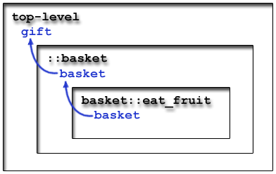
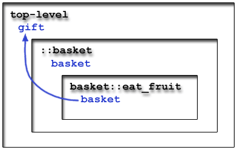

Information for developers (including the requirements and design docs) should go here.
The Tcl language is fairly good at string manipulation, but it fails to provide advanced data structures and object-oriented features, which often make code a lot more manageable. Using the uplevel / upvar and namespace commands, in conjunction with the Tcl "array" data structure, it is possible to create code which mimics the most basic elements of OOP: methods and attributes. A large portion of ATS is built using this approach.
The namespace command is very similar to the namespace command in C. The command is used to create a new lexical scope; all variables and procs within the namespace cannot interfere with any variables and procs in any other namespace. The syntax to create a new namespace is as follows:
namespace eval namespace_name {
tcl_code
}
In order to access procedures defined inside a template, you must prefix them with the template name, as follows:
namespace_name::proc_name args
This is known as "qualifying" the procedure name.
For example, consider the following code:
namespace eval apple {
proc eat { name } {
return "$name just ate an apple"
}
}
namespace eval orange {
proc eat { name } {
return "An orange just ate $name !"
}
}
The above code defines two namespaces, apple and orange. Each namespace contains a proc named eat, but the behavior of the procs is different. Here is the output produced when calling eat in tclsh:
% apple::eat "Stas"
Stas just ate an apple
% orange::eat "Stas"
An orange just ate Stas !
%
Namespace procedures can also be defined outside the namespace eval block, as long as they are qualified. For example, the above code can be rewtitten as:
namespace eval apple {}
namespace eval orange {}
proc apple::eat { name } {
return "$name just ate an apple"
}
proc orange::eat { name } {
return "An orange just ate $name !"
}
Namespaces may also be nested, as shown in the example below:
namespace eval apple {
namespace eval core {}
namespace eval meat {}
}
proc apple::core::eat {} {
return "The core is pretty much inedible"
}
proc apple::meat::eat {} {
return "Yummy"
}
When a proc which is defined inside a namespace calls another proc, the other proc is first assumed to be in the current namespace. If the current namespace contains no such proc, the proc is then assumed to reside in the global namespace. However, if the function call is prepended with the :: resolution operator, the global namespace will be searched directyl. For example, consider the code below:
namespace eval apple {}
namespace eval orange {}
proc eat { name } {
return "$name goes hungry today..."
}
proc apple::eat { name } {
return "$name just ate an apple"
}
proc orange::eat { name } {
return "An orange just ate $name !"
}
proc apple::test {} {
set result ""
# Line 20
append result "[eat Stas] \n"
# Line 22
append result "[::eat Stas] \n"
# Line 24
append result "[::orange::eat Stas] \n"
return $result
}
The output of apple::test is as follows:
% apple::test
Stas just ate an apple
Stas goes hungry today...
An orange just ate Stas !
%
In line 20, the procedure eat exists in the apple namespace, and since the current procedure (test) is in the same namespace, the eat procedure in the apple namespace is called. In line 22, the eat procedure is called in the global namespace. In line 24, the fully qualified eat procedure in the orange namespace is called.
In addition to functions, namespaces may contain variables. Namespace variables act similarly to global variables. A namespace variable is only visible inside its namespace; the variable is persistent for the duration of the request and visible only to the current Tcl interpreter. The syntax to declare a namespace variable is as follows:
namespace eval namespace_name {
variable variable_name optional_initial_value
tcl_code
}
In order to access the variable, each proc within the namespace must declare the variable at the beginning of the procedure body:
proc namespace_name::proc_name { args } {
variable variable_name
proc_body
}
The following code demonstrates the usage of namespace variables:
namespace eval apple {
variable apple_count 0
}
proc apple::add_apple {} {
variable apple_count
incr apple_count
}
proc apple::eat { name } {
variable apple_count
if { $apple_count > 0 } {
incr apple_count -1
return "$name just ate an apple"
} else {
return "Out of apples"
}
}
The Tcl evaluation below demonstrates that the variable apple_count is persistent:
% apple::eat "Stas"
Out of apples
% apple::add_apple
1
% apple::eat "Stas"
Stas just ate an apple
% apple::eat "Stas"
Out of apples
%
A note of caution about namespace variables: the variables are persistent within the current Tcl interepreter, which may survive across requests. Therefore, the variables should always be initialized manually at the beginning of each request.
With a small stretch of imagination, one can pretend that a namespace is a class, the namespace procs are methods, and namespace variables are static attributes. For example, the apple counting example above implements a simple class, with two methods and a "private" static attribute (since there is no apple::get_count method).
In real OOP, one class may extend (or subclass) another (known as the superclass), inheriting all of its attributes and methods. The subclass may then overload some of the superclass's methods, changing their behavior. Something similar may be accomplished in Tcl with the usage of a dispatch proc. The proc takes a class name and some arguments, and passes them to the appropriate method, as follows:
proc namespace_name::method_name { type arg1 arg2 ... } {
if { [catch type::method_name $arg1 $arg2 ...] } {
# The specific method does not exist; perform some default action
}
}
The dispatch proc first checks if an overloaded method exists, using the info procs command. If the method does exist, the dispatch proc calls the method; otherwise, the dispatch proc may throw an error or perform some default action.
Dispatch procs can also be used to abstract the methods within one class, hiding its namespace-based implementation, as shown in the example below:
namespace eval banana {}
# Main dispatch procedure for the class
proc banana { method_name args } {
eval banana::$method_name $args
}
proc banana::peel {} {
return "The banana is now peeled"
}
proc banana::eat { inches } {
return "You bite off $inches inches from the banana"
}
This approach allows the code to mimic the behavior of many multi-purpose operators in Tcl (such as string or info), as shown below:
% banana peel
The banana is now peeled
% banana eat 5
You bite off 5 inches from the banana
% banana foo
invalid command name "banana::foo"
%
The facilities discussed above are sufficient for the implementation of any simple "class", but they lack an important feature: storing multiple non-static attributes (storing a distinct set of attribute values for each instance of the "class"). Arrays can be used to remove this deficiency.
Tcl provides a data structure known as the array, though in reality the data structure resembles a hash table more than a true array. Tcl arrays are very similar to ns_sets: just like ns_sets, arrays associate keys with values. Unlike the ns_sets, however, arrays are part of the Tcl interpreter and not the AOLServer, which makes them a lot faster. The syntax to manipulate arrays is as follows:
# Set some key to a value
set array_name(key_name) value
# Retrieve the value of some key
set result
$array_name(key_name)
If the array whose key is to be set does not exist, it is automatically created. However, if the array whose key is to be retrieved does not exist The info exists command can be used to determine if an array key exists before accessing it:
if { [info exists array_name(key_name)] } {
# The key exists, so access it
} else {
# The key does not exist
}
For example, the code below demonstrates some of the basic actions that can be performed on arrays:
% set basket(apples) 1
1
% info exists basket(apples)
1
% info exists basket(oranges)
0
% info exists basket
1
% set basket(apples)
1
% incr basket(apples)
2
% set basket(apples)
2
%
The array command can be used to manipulate Tcl arrays. Particularly, the array get and array set commands can be used to convert between arrays and lists. The array get command converts an array to a list with an even number of elements. The odd-numbered elements are the key names and the even-numbered elements are the key values, as shown in the example below:
% set basket(apples) 1
1
% set basket(oranges) 5
5
% array get basket
apples 1 oranges 5
%
The array set command takes a list in the same format, and sets the keys of the specified array to their values in the list:
% array set basket [list apples 3 oranges 4 ants 15]
% set basket(apples)
3
% set basket(oranges)
4
% set basket(ants)
15
%
The array command has other useful operands, detailed in the official man pages. In addition, ATS defines the following proc for dealing with arrays (all procs are in the template::util namespace):
| Proc | Effect | Example |
|---|---|---|
| array_to_vars { arrayname } | Sets local variables in the calling frame; set one variable for each key in the array. The value of the variable is the value associated with the key in the array. See the discussion of the upvar command below to see how this is accomplished. | template::util::array_to_vars my_array |
| vars_to_array { arrayname args } | The opposite of array_to_vars. Sets array keys to the values contained in the local variables whose names are supplied to the proc. |
set var1 "foo"
set var2 "bar"
template::util::vars_to_array my_array var1 var2
|
| proc list_to_array { values arrayname keys } | Takes a list of values and a list of keys, and sets the array keys to the values specified in the lists. The lists must have the same length. | template::util::list_to_array {1 15} my_array {apples oranges} |
| list_of_lists_to_array { lists arrayname } | Takes a list of key-value pairs, in form {{key1 value1} {key2 value2} ...} and sets the array contents accordingly. | template::util::list_of_lists_to_array {{apples 1} {oranges 2} my_array |
| list_to_lookup { values arrayname } | Converts a list of input values into an array which can be used as a sparse lookup bitmap. Each key in the array has a numeric value which signifies its position in the original list. | template::util::list_to_lookup {a b c} my_array |
Unlike ns_sets, however, arrays in Tcl are not "first-class". This means that they cannot be passed to procs as parameters, and cannot be returned from procs as return values. For example, assuming that an array variable called my_array exists, all of the following calls are illegal:
set other_array $my_array
set x [some_proc $my_array]
set my_array [some_proc]
Note that the above restrictions apply only to the arrays themselves; array keys are no different from ordinary variables in Tcl, and all of the following calls are legal:
set var $my_array(foo)
set x [some_proc $my_array(foo)]
set my_array(foo) [some_proc]
Of course, arrays can still be passed between procs using the array get and array set commands, but this approach is very inefficient. Instead, the upvar command can be used to pass the arrays by reference.
The upvar command can be used to pass variables by reference. The syntax for upvar is:
upvar optional_level upper_variable1 local_variable1 upper_variable2 local_variable2 ...
The upvar command makes a local variable point to the same location as a variable in the calling frame (note that a namespace also counts as a frame). For example, consider the following code:
proc double {} {
upvar the_var x
set x [expr $x * 2]
}
The double proc associates a local variable called x with the variable in the calling frame called the_var, and then modifies the value of that variable. The results of calling the proc are shown below:
% set the_var 3
3
% double
6
% set the_var
6
%
As with any Tcl command, the parameters to uplevel need not be literals. For example, the classic "swap" procedure may be implemented in Tcl as follows:
proc swap { reference1 reference2 } {
upvar $reference1 a $reference2 b
set temp $a
set a $b
set b $temp
}
The swap procedure looks up two variables in the calling frame and swaps their contents, as demonstrated below:
% set x 3
3
% set y 5
5
% swap x y
3
% set x
5
% set y
3
%
Arrays may be passed to procs using the upvar statement. Since Tcl arrays are essentially hash tables, they are ideal for storing object attributes. Consider the following code:
######## A full-fledged Tcl "class" ##########
namespace eval basket {}
# Create a new fruit basket
proc basket::create { basket_ref } {
upvar $basket_ref basket
set basket(apples) 0
set basket(oranges) 0
}
# Add apples to the basket
proc basket::add_apples { basket_ref count } {
upvar $basket_ref basket
incr basket(apples) $count
# An orange gets squished
if { $basket(oranges) > 0 } {
incr basket(oranges) -1
}
return $basket(apples)
}
# Add oranges to the basket
proc basket::add_oranges { basket_ref count } {
upvar $basket_ref basket
incr basket(oranges) $count
return $basket(oranges)
}
# Eat the juiciest fruit
proc basket::eat_fruit { basket_ref } {
upvar $basket_ref basket
if { $basket(oranges) > $basket(apples) } {
incr basket(oranges) -1
return "Orange"
} elseif { $basket(apples) > 0 } {
incr basket(apples) -1
return "Apple"
} else {
error "The basket is empty"
}
}
# Dispatch proc for the basket class
proc basket { method_name basket_ref args } {
upvar $basket_ref basket
eval basket::$method_name basket $args
}
The above code creates a very simple "class" which represents a fruit basket. The class has two "attributes", apples and oranges. The class also has two "methods" which add apples or oranges to the basket, a method which removes a fruit from the basket, and a constructor method (basket::create). The attributes are maintained in an array, and the array reference is passed to each method as the first argument (similarly to how the "this" pointer is passed in C++ and Java).
The Tcl session shown below instantiates two basket objects and performs some operations on them:
% basket create gift
0
% basket create stas
0
% basket add_apples gift 1
1
% basket add_oranges stas 1
1
% basket add_apples gift 1
2
% basket eat_fruit stas
Orange
% basket eat_fruit stas
The basket is empty
% basket eat_fruit gift
Apple
% basket eat_fruit gift
Apple
% basket eat_fruit gift
The basket is empty
%
A large portion of the ATS uses the approach demonstrated above; in particular, the "form", "element" and "request" pseudo-classes are implemented in this way.
Note that the basket dispatch proc above uses upvar to bind a local variable basket to the array which holds the basket attributes in the calling frame. It then gives "basket" as the reference to one of the basket class methods:

However, the basket reference in the ::basket proc is not useful; it is merely used to pass the reference down to the basket::eat_fruit proc. By using the level parameter to upvar, this extra reference can be eliminated:

The Tcl interpreter will bind the local variable to a variable in the levelth calling frame, relative to the current frame. By default, the level is assumed to be 1 (one), and the local variable is bound to a variable in the caller of the current proc. If the level is 2, the local variable will be bound to the variable in the caller's caller; and so on. Therefore, the basket dispatch methods may be rewritten as follows (changes from the previous example are shown in bold):
namespace eval basket {}
# Create a new fruit basket
proc basket::create { basket_ref } {
upvar 2 $basket_ref basket
set basket(apples) 0
set basket(oranges) 0
}
# Add apples to the basket
proc basket::add_apples { basket_ref count } {
upvar 2 $basket_ref basket
incr basket(apples) $count
# An orange gets squished
if { $basket(oranges) > 0 } {
incr basket(oranges) -1
}
return $basket(apples)
}
# Add oranges to the basket
proc basket::add_oranges { basket_ref count } {
upvar 2 $basket_ref basket
incr basket(oranges) $count
return $basket(oranges)
}
# Eat the juiciest fruit
proc basket::eat_fruit { basket_ref } {
upvar 2 $basket_ref basket
if { $basket(oranges) > $basket(apples) } {
incr basket(oranges) -1
return "Orange"
} elseif { $basket(apples) > 0 } {
incr basket(apples) -1
return "Apple"
} else {
error "The basket is empty"
}
}
# Dispatch proc for the basket class
proc basket { method_name basket_ref args } {
# Code removed ---> upvar $basket_ref basket
eval basket::$method_name $basket_ref $args
}
The level parameter may also be 0 (zero). In this case, a local variable may be "aliased" under a different name, as is shown below:
% set x 5
5
% upvar 0 x y
% set y
5
% set y 6
6
% set x
6
%
In addition to relative levels, upvar may refer to an absolute level. This can be accomplished by prepending the level with a pound sign (#), despite the fact that the pound sign is normally reserved for comments:
upvar #level upper_variable1 local_variable1 upper_variable2 local_variable2 ...
The top level (the level which contains all the global variables) is #0, the next level below that is #1, and so on. The absolute level is useful when there are many (possibly recursive) procs that wish to refer to the same object (as opposed to passing the object between the procs by value). The ATS form API (form create, element create and so on) uses this technique.
In addition to binding variables in the calling frame via the upvar command, Tcl provides the capability to execute code in the calling frame via the uplevel command. The syntax for uplevel is as follows:
uplevel optional_level code
The level is handled identically to the level in the upvar command, and the code parameter will be executed as if it was in the specified frame. For example, consider the following code:
proc create_gift_basket {} {
uplevel {
basket create gift_basket
basket add_apples gift_basket 2
basket add_oranges gift_basket 3
}
}
This proc creates a fruit basket and fills it with some apples and oranges:
% create_gift_basket
3
% basket eat_fruit gift_basket
Orange
% basket eat_fruit gift_basket
Apple
% basket eat_fruit gift_basket
Orange
% basket eat_fruit gift_basket
Apple
% basket eat_fruit gift_basket
Orange
% basket eat_fruit gift_basket
The basket is empty
%
Note that, in Tcl, code is stored as text. Therefore, using uplevel it is possible to create procs that take a piece of code as a parameter (similar to the lambda-functions in LISP), as is shown below:
proc list_map { the_list code } {
foreach element $the_list {
upvar list_item item
set item $element
uplevel $code
}
}
The list_map proc takes a list and some executable code as parameters. It then traverses the list element-by-element. For each element in the list, the proc uses upvar to create a variable in the calling frame called "list_item". The procedure then executes the arbitrary code; the code runs in the calling frame and may refer to any variables there, including list_item, as in this example:
% set a [list 1 2 3 4]
1 2 3 4
% set factor 3
3
% set b [list]
% list_map $a {lappend b [expr $list_item * $factor]}
% set b
3 6 9 12
%
Despite their advantages, uplevel and upvar should be used with caution. Excessive usage of upvar (especially upvar to absolute levels) may render code unreadable, since it is difficult to trace all the variable references back to their source through the various function calls. In addition, upvar paves the way for dreaded "pointer aliasing" bugs. Using upvar, it becomes possible for two unrelated procedures to accidentally reference the same variable in the calling frame, and thus corrupt the data. Combined with namespace variables, upvar can do a lot of damage.
The uplevel command has the potential to introduce even more subtle bugs, since it can overwrite arbitrary variables in the calling frame. For example, consider the following code:
proc clobber {} {
uplevel {
for { set i 1 } { $i <= 3 } { incr i } {
# Do something
}
}
}
The clobber proc will work fine as long as there is no variable called "i" in the calling frame. If that variable exists, the proc will overwrite the variable's value. Since variables such as "i", "j", etc. are often used in loops, the behavior of clobber may become completely unpredictable.
In addition, upvar and uplevel may present a security risk. The risk is even greater than the risk posed by eval, since eval can only execute code in the current frame, and upvar / uplevel may execute code in any frame.
Namespaces, upvars and arrays may be used to simulate OOP behavior in Tcl. This approach is widely used throughout ATS in order to make the code more manageable and easily extensible. However, this approach (and especially upvar/uplevel commands) should be used with caution since it can decrease the readability of the code and introduce hidden bugs.